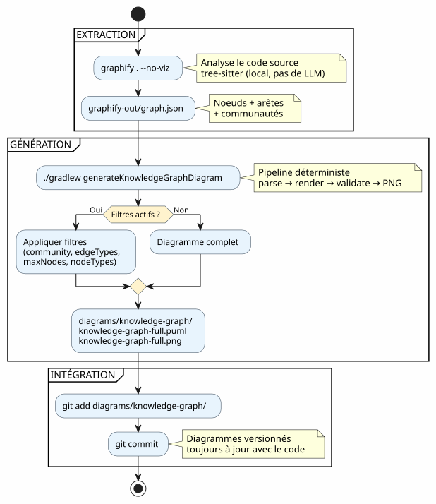
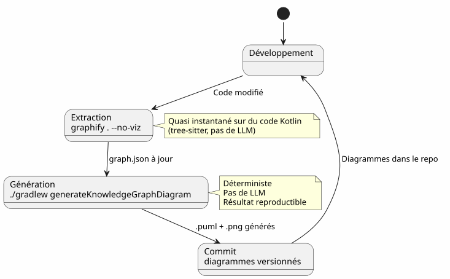
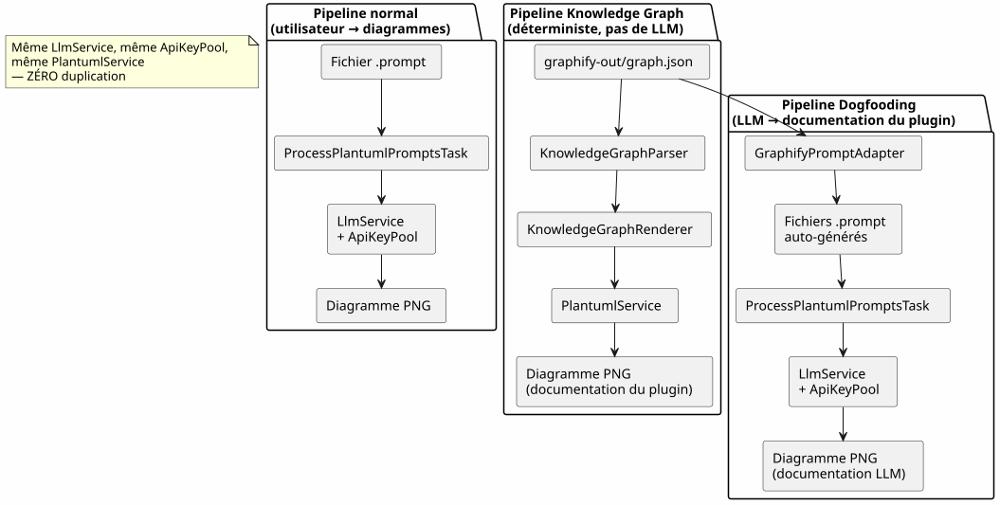
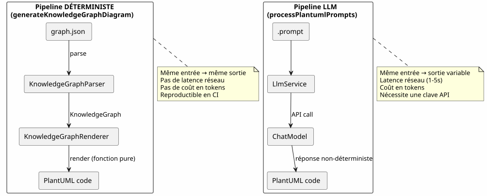
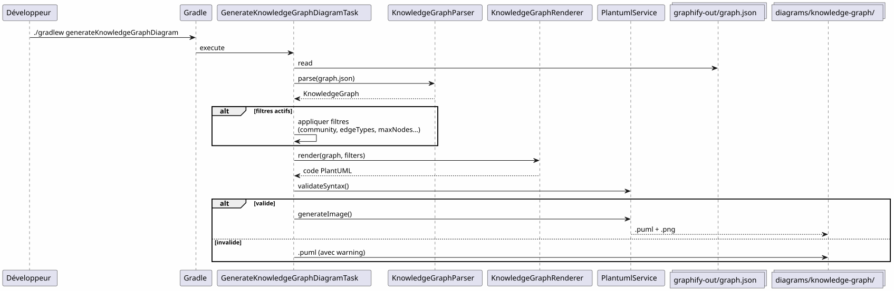

Intégrer Graphify dans un workflow Gradle : du Knowledge Graph au diagramme PlantUML en une commande
Publié le 19 April 2026
- 1. Le problème : des diagrammes toujours en retard sur le code
- 2. La solution : un pipeline déterministe Knowledge Graph → PlantUML
- 3. Étape 1 : Installer Graphify et extraire le Knowledge Graph
- 4. Étape 2 : Le plugin Gradle transforme le Knowledge Graph en PlantUML
- 5. Étape 3 : Utilisation au quotidien
- 6. Le pipeline complet dans un workflow Gradle
- 7. Le dogfooding : le plugin se documente lui-même
- 8. Pourquoi c’est déterministe (et pourquoi ça compte)
- 9. Diagrammes du pipeline lui-même
- 10. Intégration dans la gouvernance de projet
- 11. Mise en place : checklist en 5 minutes
- 12. Pièges et mitigations
- 13. Ce qu’on obtient au final
- 14. Liens
Votre codebase grandit. Les dépendances entre modules se multiplient. La documentation architecture devient obsolète avant même d’être écrite. Et si votre build Gradle pouvait automatiquement générer des diagrammes à jour à partir de la structure réelle du code ? C’est exactement ce que fait le pipeline Graphify + PlantUML Gradle Plugin : graphify . --no-viz extrait le Knowledge Graph, ./gradlew generateKnowledgeGraphDiagram le transforme en diagrammes PlantUML. Zéro LLM, zéro manuel, 100% déterministe.
1. Le problème : des diagrammes toujours en retard sur le code
Tout projet qui dépasse quelques milliers de lignes connaît ce syndrome :
-
On dessine un diagramme d’architecture au début du projet
-
Le code évolue, les dépendances changent
-
Le diagramme devient un mensonge décoratif
-
Personne ne le met à jour parce que c’est pénible
-
Les nouveaux arrivants se basent dessus et font des erreurs

La question n’est pas faut-il des diagrammes ? — tout le monde sait que oui. La question est : qui les maintient à jour ?
La réponse : personne. Sauf si c’est automatique.
2. La solution : un pipeline déterministe Knowledge Graph → PlantUML
Le principe est simple : au lieu de dessiner les diagrammes à la main, on les génère depuis la structure réelle du code.
Deux commandes. C’est tout.
# Étape 1 : extraire le Knowledge Graph
graphify . --no-viz
# Étape 2 : générer les diagrammes PlantUML
./gradlew generateKnowledgeGraphDiagramLe résultat ? Des fichiers .puml et .png dans diagrams/knowledge-graph/, versionnés dans Git, toujours à jour avec le code.
3. Étape 1 : Installer Graphify et extraire le Knowledge Graph
3.1. Installation
Graphify est un outil Python qui analyse votre codebase et construit un graphe de connaissances structuré :
# Méthode recommandée
uv tool install graphifyy && graphify install --platform opencode
# Alternative avec pip
pip install graphifyy && graphify install --platform opencode3.2. Configurer les exclusions
Créer un fichier .graphifyignore à la racine du projet pour exclure les fichiers qui ne font pas partie de la logique métier :
# Secrets — JAMAIS dans le graphe
*-context.yml
*.env
# Fichiers générés
build/
.gradle/
# Tests fonctionnels
src/functionalTest/3.3. Extraire le Knowledge Graph
graphify . --no-vizLe flag --no-viz saute la génération HTML (inutile dans un pipeline Gradle). Le résultat est un fichier graphify-out/graph.json contenant :
-
Noeuds : classes, fonctions, fichiers — avec leur type et communauté
-
Arêtes : relations entre noeuds (EXTRACTED depuis le code, INFERRED par l’LLM)
-
Communautés : regroupements automatiques de noeuds liés
graph.json{
"nodes": [
{"id": "0", "label": "LlmService", "file_type": "code", "community": 0},
{"id": "1", "label": "ApiKeyPool", "file_type": "code", "community": 0},
{"id": "2", "label": "PlantumlService", "file_type": "code", "community": 1}
],
"links": [
{"source": "1", "target": "0", "relation": "uses", "confidence": "EXTRACTED", "weight": 0.9},
{"source": "0", "target": "2", "relation": "calls", "confidence": "INFERRED", "weight": 0.7}
]
}|
Le code source ( |
4. Étape 2 : Le plugin Gradle transforme le Knowledge Graph en PlantUML
4.1. Architecture du pipeline
Le plugin com.cheroliv.plantuml intègre une tâche generateKnowledgeGraphDiagram qui transforme graph.json en diagrammes PlantUML de manière totalement déterministe :

4.2. Les composants internes
| Composant | Rôle |
|---|---|
|
Parse |
|
Transforme déterministement un |
|
Tâche Gradle qui orchestre : parse → render → validate → PNG. Configurable via propriétés Gradle. |
|
Modèles de données : |
|
Validation syntaxique + rendu PNG (réutilisé par toutes les tâches du plugin). |
4.3. Règles de rendu
Le renderer applique des conventions visuelles déterministes :
| Type d’arête | Notation PlantUML | Signification |
|---|---|---|
EXTRACTED |
|
Relation extraite du code source (certitude) |
INFERRED |
|
Relation inférée par l’LLM (score de confiance) |
AMBIGUOUS |
|
Relation ambiguë (à vérifier) |
Les communautés sont rendues comme des packages PlantUML avec une palette de couleurs automatique.
5. Étape 3 : Utilisation au quotidien
5.1. Diagramme complet
# Générer le diagramme du Knowledge Graph complet
./gradlew generateKnowledgeGraphDiagramSortie : diagrams/knowledge-graph/knowledge-graph-full.puml + .png
5.2. Filtrer par communauté
# Une seule communauté
./gradlew generateKnowledgeGraphDiagram \
-Pplantuml.kg.community=community_0
# Limiter le nombre de noeuds (lisibilité)
./gradlew generateKnowledgeGraphDiagram \
-Pplantuml.kg.community=community_0 \
-Pplantuml.kg.maxNodes=155.3. Filtrer par type d’arête
# Uniquement les relations certaines (EXTRACTED)
./gradlew generateKnowledgeGraphDiagram \
-Pplantuml.kg.edgeTypes=EXTRACTED
# Relations certaines + inférées
./gradlew generateKnowledgeGraphDiagram \
-Pplantuml.kg.edgeTypes=EXTRACTED,INFERRED5.4. Filtrer par type de noeud et confiance
# Uniquement les classes de code
./gradlew generateKnowledgeGraphDiagram \
-Pplantuml.kg.nodeTypes=code
# Seuil de confiance minimum (pour les INFERRED)
./gradlew generateKnowledgeGraphDiagram \
-Pplantuml.kg.minConfidence=0.75.5. Répertoire de sortie personnalisé
./gradlew generateKnowledgeGraphDiagram \
-Pplantuml.kg.outputDir=docs/architecture5.6. Référence complète des propriétés
| Propriété | Défaut | Description |
|---|---|---|
|
(toutes) |
Filtrer les communautés par nom (correspondance sous-chaîne) |
|
(tous) |
Types d’arêtes séparés par virgules : |
|
|
Seuil minimum de confiance pour les arêtes |
|
(illimité) |
Nombre maximum de noeuds à afficher |
|
(tous) |
Types de noeuds séparés par virgules (ex. |
|
|
Répertoire de sortie pour les fichiers |
6. Le pipeline complet dans un workflow Gradle
6.1. Workflow type

6.2. Intégration dans le cycle de développement
Le pipeline s’intègre naturellement dans les étapes clés du développement :

6.3. Mise à jour incrémentale
Quand le code change, on ne reconstruit pas tout le graphe depuis zéro :
# Mise à jour incrémentale (fichiers modifiés uniquement)
graphify . --update
# Puis régénérer les diagrammes
./gradlew generateKnowledgeGraphDiagram|
|
7. Le dogfooding : le plugin se documente lui-même
Le plugin PlantUML existe pour transformer des prompts en diagrammes. Il peut aussi transformer le Knowledge Graph de sa propre codebase en diagrammes de documentation. C’est du dogfooding : le plugin consomme son propre service.

Tâches Gradle associées :
| Tâche | LLM ? | Description |
|---|---|---|
|
Non |
Transforme |
|
Oui |
Génère des |
# Documentation déterministe (rapide, pas de LLM)
./gradlew generateKnowledgeGraphDiagram
# Documentation LLM (plus riche, consomme des tokens)
./gradlew generateDiagramDocs8. Pourquoi c’est déterministe (et pourquoi ça compte)
Le point clé du pipeline generateKnowledgeGraphDiagram : il n’appelle aucun LLM. La transformation graph.json → PlantUML est une fonction pure.

Les avantages concrets :
| Avantage | Impact |
|---|---|
Reproductibilité |
Même |
Zéro coût |
Pas d’appel LLM = pas de tokens = pas de facture API. |
Zéro latence |
Parse + render prend ~100ms, pas 1-5 secondes. |
Compatible CI |
Pas de clé API nécessaire. Pas de flaky test dû à une réponse LLM variable. |
Versionnable |
Le |
9. Diagrammes du pipeline lui-même
Pour boucler la boucle, voici le diagramme du pipeline tel qu’il serait généré par le plugin :

10. Intégration dans la gouvernance de projet
Dans notre projet, ce pipeline s’intègre dans une stratégie de gestion de contexte EAGER/LAZY pour l’agent IA. Le Knowledge Graph remplace la documentation architecture manuelle par un graphe structuré, queryable, et auto-mis à jour.

Le mariage des deux systèmes est complémentaire :
-
La stratégie gère le QUAND et le COMMENT — gouvernance, workflow, archivage
-
Graphify gère le QUOI et le OÙ — structure du code, relations, requêtes ciblées
La stratégie de session gère le QUAND et le COMMENT (gouvernance, workflow, seuils), Graphify gère le QUOI et le OÙ (structure du code, relations, requêtes ciblées). Le pipeline PlantUML gère le AVEC QUOI (diagrammes déterministes, versionnés, toujours à jour).
11. Mise en place : checklist en 5 minutes
| # | Étape | Commande |
|---|---|---|
1 |
Installer Graphify |
|
2 |
Configurer les exclusions |
Créer |
3 |
Extraire le Knowledge Graph |
|
4 |
Générer les diagrammes |
|
5 |
Committer les résultats |
|
# Script complet en 5 commandes
uv tool install graphifyy
cat > .graphifyignore << 'EOF'
*-context.yml
*.env
build/
.gradle/
EOF
graphify . --no-viz
./gradlew generateKnowledgeGraphDiagram
git add graphify-out/GRAPH_REPORT.adoc graphify-out/graph.json diagrams/knowledge-graph/12. Pièges et mitigations
| Piège | Description | Mitigation |
|---|---|---|
Graphe trop dense |
Un gros projet génère des centaines de noeuds illisibles |
Utiliser |
Exclusions trop larges |
Trop de fichiers dans |
Commencer par exclure seulement credentials et build |
Direction des flèches |
Les arêtes INFERRED peuvent avoir une direction ambiguë |
Filtrer par |
Graphe obsolète |
Le code change mais le graphe n’est pas reconstruit |
Utiliser |
Coût mis à jour |
Les mises à jour incrémentales sont quasi gratuites (tree-sitter local) |
Seules les docs ( |
13. Ce qu’on obtient au final

Les bénéfices concrets :
| Bénéfice | Détail |
|---|---|
Documentation toujours à jour |
Les diagrammes reflètent le code actuel, pas un snapshot manuel |
Zéro effort de maintenance |
Les diagrammes se régénèrent à chaque build |
Réduction de la dette technique |
Plus besoin de maintenir les diagrammes à la main |
Contexte visuel pour les nouveaux |
Un nouveau développeur comprend l’architecture en regardant les diagrammes |
Fine-tuning potentiel |
Les paires (sous-graphe → diagramme) sont des exemples d’entraînement IA |
Validation automatique |
|
Onboarding rapide |
5 diagrammes = vue complète de l’architecture |
Celui qui a un pourquoi peut supporter tous les comment.
Le pourquoi : des diagrammes toujours à jour. Le comment : deux commandes dans un pipeline Gradle.
14. Liens
-
Le super tips de la commande fg — article précédent sur le workflow terminal